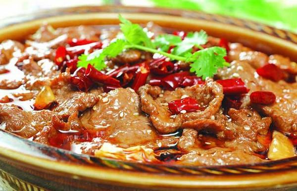
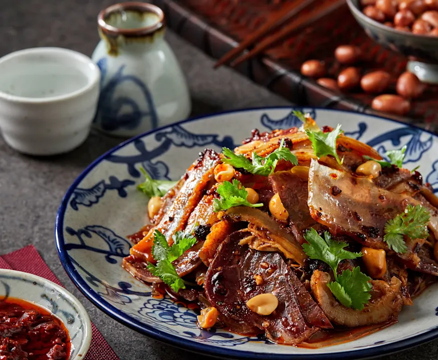

川菜 · Chuan Cuisine
麻辣背后的雅致与匠心
一、起源与历史
川菜起源于古蜀地，早在秦汉时期便已形成地方风味。明清之际，随着外来调料如辣椒的传入，川菜逐渐融合南北技艺与本土食材，形成“百菜百味”的体系。其烹饪思想强调“调味为魂”，讲究麻、辣、鲜、香、酸、甜的复合协调。
二、地理与气候影响
四川盆地湿润多雨、气候阴冷，促使人们以辛香调味驱寒祛湿。独特的地理条件也造就了丰富的食材资源，从江河湖鲜到山珍野菌，为川菜提供了多样原料。
三、主要烹调技法
- 干煸
- 回锅
- 鱼香
- 宫保
- 红油
- 泡菜
每种技法都蕴含独立味型体系，如鱼香味、怪味、陈皮味、家常味、麻辣味等。
四、代表菜肴
-
宫保鸡丁

-
麻婆豆腐
-
水煮牛肉

-
回锅肉
-
夫妻肺片

五、风味与审美
川菜的独特在于“以麻为贵、以辣为魂、以鲜为本”，追求香中带麻、辣中生鲜、浓中显雅的平衡。其味觉逻辑体现出四川人对“热烈而克制”的生活哲学。
六、文化意象
川菜不仅是一种饮食，更是四川人开放包容、兼收并蓄的象征。从成都茶馆的火锅桌到巷口小馆的干锅香，川菜体现了“烟火气中的文化雅趣”。
七、地方俗语
“食在中国，味在四川。”
“三天不吃辣，走路打摆子。”
拓展视野：视频
拓展视野：学术资料
| 研究论文 / 报告名称 | 链接 |
|---|---|
| 《川菜文化的传承与创新研究》 | 查看论文 |
| 《川菜味型体系的形成与演变》 | 查看论文 |
| 《从地域文化视角探讨川菜的全球传播》 | 查看论文 |
| 《川菜风味化学基础与现代食品工业的融合》 | 查看论文 |
| 《川菜的地域性与文化认同研究》 | 查看论文 |